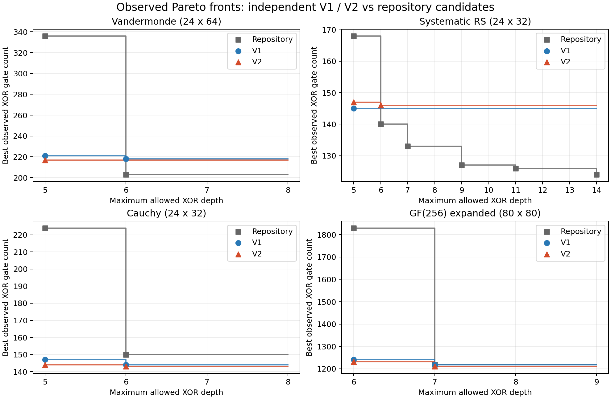

点的格式为（XOR 门数，实际深度），两者均越小越好。我们的旧版和新版均独立合成，不载入仓库线路。旧版16次重启；新版两种策略各8次。
仓库列汇总原有候选、重平衡版本、深度感知调度变体及已完成束搜索；历史搜索预算不同，不能解释为统一时间预算下的优劣证明。
| 矩阵 | 仓库已有候选 | 旧版 | 新版 |
|---|---|---|---|
| Vandermonde（24×64） | (336, 5)、(203, 6) | (221, 5)、(218, 6) | (217, 5) |
| 系统化 RS（24×32） | (168, 5)、(140, 6)、(133, 7)、(127, 9)、(126, 11)、(124, 14) | (145, 5) | (147, 5)、(146, 6) |
| Cauchy（24×32） | (224, 5)、(150, 6) | (147, 5)、(144, 6) | (144, 5)、(143, 6) |
| GF(2⁸) 展开（80×80） | (1830, 6)、(1219, 7) | (1241, 6)、(1217, 7) | (1231, 6)、(1210, 7) |
新上限没有产生更少门数的独立合成点。RS额外测试了仓库前沿对应的9、11、14层。所有122条线路记录通过独立逐门审计；其中可能有不同方法产生的重复点。完整数据包括被支配的点，均列于下方。

合并后观察前沿：(217, 5)、(203, 6)
| 来源 | 标签 | 请求上限 | XOR | 实际深度 | 自身方法前沿点 |
|---|---|---|---|---|---|
| Repository | CSE-chained | — | 220 | 10 | 否 |
| Repository | CSE-chained-rebalanced | — | 220 | 6 | 否 |
| Repository | CSE-share2 | — | 220 | 6 | 否 |
| Repository | CSE-share3 | — | 243 | 6 | 否 |
| Repository | CSE-noshare | — | 336 | 5 | 是 |
| Repository | structured_ring_example.json:/direct_cse | — | 217 | 13 | 否 |
| Repository | structured_ring_example.json:/direct_cse-rebalanced | — | 217 | 6 | 否 |
| Repository | structured_ring_example.json:/direct_uber/1/circuit | — | 331 | 99 | 否 |
| Repository | structured_ring_example.json:/direct_uber/1/circuit-rebalanced | — | 312 | 10 | 否 |
| Repository | structured_ring_example.json:/direct_uber/2/circuit | — | 283 | 75 | 否 |
| Repository | structured_ring_example.json:/direct_uber/2/circuit-rebalanced | — | 277 | 17 | 否 |
| Repository | structured_ring_example.json:/direct_uber/3/circuit | — | 261 | 82 | 否 |
| Repository | structured_ring_example.json:/direct_uber/3/circuit-rebalanced | — | 257 | 31 | 否 |
| Repository | structured_ring_example.json:/direct_xsets/MW_SQ/circuit | — | 219 | 12 | 否 |
| Repository | structured_ring_example.json:/direct_xsets/MW_SQ/circuit-rebalanced | — | 219 | 6 | 否 |
| Repository | structured_ring_example.json:/direct_xsets/UBER_XSET/circuit | — | 212 | 15 | 否 |
| Repository | structured_ring_example.json:/direct_xsets/UBER_XSET/circuit-rebalanced | — | 212 | 8 | 否 |
| Repository | structured_ring_example.json:/ring | — | 203 | 10 | 否 |
| Repository | structured_ring_example.json:/ring-rebalanced | — | 203 | 6 | 是 |
| Repository | structured_ring_example.json:/ring_cse | — | 204 | 10 | 否 |
| Repository | structured_ring_example.json:/ring_cse-rebalanced | — | 204 | 6 | 否 |
| Repository | structured_ring_example.json:/ring_mw_pipeline/ring | — | 203 | 10 | 否 |
| Repository | structured_ring_example.json:/ring_mw_pipeline/ring-rebalanced | — | 203 | 6 | 是 |
| Repository | structured_ring_example.json:/ring_uber_pipeline/ring | — | 204 | 12 | 否 |
| Repository | structured_ring_example.json:/ring_uber_pipeline/ring-rebalanced | — | 203 | 8 | 否 |
| Repository | native_depth_aware_vandermonde:CSE-chained | — | 220 | 10 | 否 |
| Repository | native_depth_aware_vandermonde:CSE-chained-rebalanced | — | 220 | 6 | 否 |
| Repository | native_depth_aware_vandermonde:CSE-share2-depth | — | 221 | 6 | 否 |
| Repository | native_depth_aware_vandermonde:CSE-share3-depth | — | 245 | 6 | 否 |
| Repository | native_depth_aware_vandermonde:CSE-noshare-depth | — | 336 | 5 | 是 |
| Repository | beam_vandermonde_d6:DEPTH_BOUNDED_XSET_BEAM | 6 | 221 | 6 | 否 |
| V1 | OUR_DCCSE | 5 | 221 | 5 | 是 |
| V2 | OUR_DCCSE_V2 | 5 | 218 | 5 | 否 |
| V1 | OUR_DCCSE | 6 | 218 | 6 | 是 |
| V2 | OUR_DCCSE_V2 | 6 | 217 | 5 | 是 |
| V1 | OUR_DCCSE | 7 | 218 | 6 | 是 |
| V2 | OUR_DCCSE_V2 | 7 | 217 | 5 | 是 |
| V1 | OUR_DCCSE | 8 | 218 | 6 | 是 |
| V2 | OUR_DCCSE_V2 | 8 | 217 | 5 | 是 |
合并后观察前沿：(145, 5)、(140, 6)、(133, 7)、(127, 9)、(126, 11)、(124, 14)
| 来源 | 标签 | 请求上限 | XOR | 实际深度 | 自身方法前沿点 |
|---|---|---|---|---|---|
| Repository | CSE-chained | — | 149 | 8 | 否 |
| Repository | CSE-chained-rebalanced | — | 149 | 6 | 否 |
| Repository | CSE-share2 | — | 149 | 6 | 否 |
| Repository | CSE-share3 | — | 168 | 5 | 是 |
| Repository | CSE-noshare | — | 247 | 5 | 否 |
| Repository | practical_mds_examples.json:/examples/systematic-rs-7-4/direct_cse | — | 146 | 10 | 否 |
| Repository | practical_mds_examples.json:/examples/systematic-rs-7-4/direct_cse-rebalanced | — | 146 | 6 | 否 |
| Repository | practical_mds_examples.json:/examples/systematic-rs-7-4/measurements/4/circuit | — | 126 | 12 | 否 |
| Repository | practical_mds_examples.json:/examples/systematic-rs-7-4/measurements/4/circuit-rebalanced | — | 126 | 11 | 是 |
| Repository | practical_mds_examples.json:/examples/systematic-rs-7-4/measurements/5/circuit | — | 140 | 8 | 否 |
| Repository | practical_mds_examples.json:/examples/systematic-rs-7-4/measurements/5/circuit-rebalanced | — | 140 | 6 | 是 |
| Repository | practical_mds_examples.json:/examples/systematic-rs-7-4/measurements/6/circuit | — | 141 | 10 | 否 |
| Repository | practical_mds_examples.json:/examples/systematic-rs-7-4/measurements/6/circuit-rebalanced | — | 141 | 7 | 否 |
| Repository | practical_mds_examples.json:/examples/systematic-rs-7-4/measurements/7/circuit | — | 134 | 10 | 否 |
| Repository | practical_mds_examples.json:/examples/systematic-rs-7-4/measurements/7/circuit-rebalanced | — | 132 | 9 | 否 |
| Repository | practical_mds_examples.json:/examples/systematic-rs-7-4/measurements/8/circuit | — | 129 | 15 | 否 |
| Repository | practical_mds_examples.json:/examples/systematic-rs-7-4/measurements/8/circuit-rebalanced | — | 129 | 11 | 否 |
| Repository | practical_mds_examples.json:/examples/systematic-rs-7-4/measurements/10/circuit | — | 136 | 10 | 否 |
| Repository | practical_mds_examples.json:/examples/systematic-rs-7-4/measurements/10/circuit-rebalanced | — | 136 | 7 | 否 |
| Repository | practical_mds_examples.json:/examples/systematic-rs-7-4/measurements/11/circuit | — | 133 | 11 | 否 |
| Repository | practical_mds_examples.json:/examples/systematic-rs-7-4/measurements/11/circuit-rebalanced | — | 133 | 7 | 是 |
| Repository | practical_mds_examples.json:/examples/systematic-rs-7-4/ring | — | 124 | 15 | 否 |
| Repository | practical_mds_examples.json:/examples/systematic-rs-7-4/ring-rebalanced | — | 124 | 14 | 是 |
| Repository | practical_mds_examples.json:/examples/systematic-rs-7-4-ring12/ring | — | 127 | 11 | 否 |
| Repository | practical_mds_examples.json:/examples/systematic-rs-7-4-ring12/ring-rebalanced | — | 127 | 9 | 是 |
| Repository | native_depth_aware_rs:CSE-chained | — | 149 | 8 | 否 |
| Repository | native_depth_aware_rs:CSE-chained-rebalanced | — | 149 | 6 | 否 |
| Repository | native_depth_aware_rs:CSE-share2-depth | — | 149 | 6 | 否 |
| Repository | native_depth_aware_rs:CSE-share3-depth | — | 168 | 5 | 是 |
| Repository | native_depth_aware_rs:CSE-noshare-depth | — | 247 | 5 | 否 |
| Repository | beam_rs_d6:DEPTH_BOUNDED_XSET_BEAM | 6 | 149 | 6 | 否 |
| V1 | OUR_DCCSE | 5 | 145 | 5 | 是 |
| V2 | OUR_DCCSE_V2 | 5 | 147 | 5 | 是 |
| V1 | OUR_DCCSE | 6 | 145 | 5 | 是 |
| V2 | OUR_DCCSE_V2 | 6 | 146 | 6 | 是 |
| V1 | OUR_DCCSE | 7 | 145 | 5 | 是 |
| V2 | OUR_DCCSE_V2 | 7 | 146 | 6 | 是 |
| V1 | OUR_DCCSE | 8 | 145 | 5 | 是 |
| V2 | OUR_DCCSE_V2 | 8 | 146 | 6 | 是 |
| V1 | OUR_DCCSE | 9 | 145 | 5 | 是 |
| V2 | OUR_DCCSE_V2 | 9 | 146 | 6 | 是 |
| V1 | OUR_DCCSE | 11 | 145 | 5 | 是 |
| V2 | OUR_DCCSE_V2 | 11 | 146 | 6 | 是 |
| V1 | OUR_DCCSE | 14 | 145 | 5 | 是 |
| V2 | OUR_DCCSE_V2 | 14 | 146 | 6 | 是 |
合并后观察前沿：(144, 5)、(143, 6)
| 来源 | 标签 | 请求上限 | XOR | 实际深度 | 自身方法前沿点 |
|---|---|---|---|---|---|
| Repository | CSE-chained | — | 150 | 7 | 否 |
| Repository | CSE-chained-rebalanced | — | 150 | 6 | 是 |
| Repository | CSE-share2 | — | 150 | 6 | 是 |
| Repository | CSE-share3 | — | 173 | 6 | 否 |
| Repository | CSE-noshare | — | 224 | 5 | 是 |
| Repository | native_depth_aware_cauchy:CSE-chained | — | 150 | 7 | 否 |
| Repository | native_depth_aware_cauchy:CSE-chained-rebalanced | — | 150 | 6 | 是 |
| Repository | native_depth_aware_cauchy:CSE-share2-depth | — | 150 | 6 | 是 |
| Repository | native_depth_aware_cauchy:CSE-share3-depth | — | 173 | 6 | 否 |
| Repository | native_depth_aware_cauchy:CSE-noshare-depth | — | 224 | 5 | 是 |
| Repository | beam_cauchy_d6:DEPTH_BOUNDED_XSET_BEAM | 6 | 150 | 6 | 是 |
| V1 | OUR_DCCSE | 5 | 147 | 5 | 是 |
| V2 | OUR_DCCSE_V2 | 5 | 144 | 5 | 是 |
| V1 | OUR_DCCSE | 6 | 144 | 6 | 是 |
| V2 | OUR_DCCSE_V2 | 6 | 143 | 6 | 是 |
| V1 | OUR_DCCSE | 7 | 144 | 6 | 是 |
| V2 | OUR_DCCSE_V2 | 7 | 143 | 6 | 是 |
| V1 | OUR_DCCSE | 8 | 144 | 6 | 是 |
| V2 | OUR_DCCSE_V2 | 8 | 143 | 6 | 是 |
合并后观察前沿：(1231, 6)、(1210, 7)
| 来源 | 标签 | 请求上限 | XOR | 实际深度 | 自身方法前沿点 |
|---|---|---|---|---|---|
| Repository | CSE-chained | — | 1219 | 15 | 否 |
| Repository | CSE-chained-rebalanced | — | 1219 | 7 | 是 |
| Repository | CSE-share2 | — | 1219 | 7 | 是 |
| Repository | CSE-share3 | — | 1376 | 7 | 否 |
| Repository | CSE-noshare | — | 1830 | 6 | 是 |
| Repository | native_depth_aware_gf8:CSE-chained | — | 1219 | 15 | 否 |
| Repository | native_depth_aware_gf8:CSE-chained-rebalanced | — | 1219 | 7 | 是 |
| Repository | native_depth_aware_gf8:CSE-share2-depth | — | 1219 | 7 | 是 |
| Repository | native_depth_aware_gf8:CSE-share3-depth | — | 1378 | 7 | 否 |
| Repository | native_depth_aware_gf8:CSE-noshare-depth | — | 1830 | 6 | 是 |
| Repository | beam_gf8_d7:DEPTH_BOUNDED_XSET_BEAM | 7 | 1219 | 7 | 是 |
| V1 | OUR_DCCSE | 6 | 1241 | 6 | 是 |
| V2 | OUR_DCCSE_V2 | 6 | 1231 | 6 | 是 |
| V1 | OUR_DCCSE | 7 | 1217 | 7 | 是 |
| V2 | OUR_DCCSE_V2 | 7 | 1210 | 7 | 是 |
| V1 | OUR_DCCSE | 8 | 1217 | 7 | 是 |
| V2 | OUR_DCCSE_V2 | 8 | 1210 | 7 | 是 |
| V1 | OUR_DCCSE | 9 | 1217 | 7 | 是 |
| V2 | OUR_DCCSE_V2 | 9 | 1210 | 7 | 是 |
数据与边界详见 README.txt、all_candidates.csv、summary.json 及原始证据。脚本与证据保留了每次实际深度和功能验证结果。